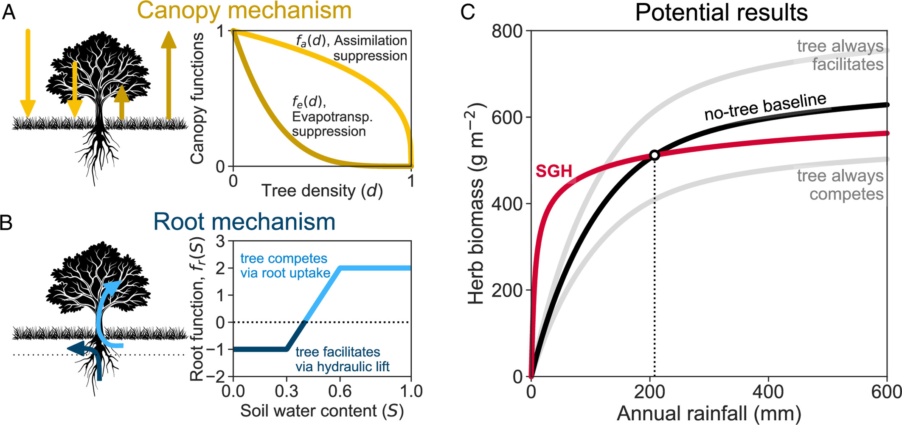
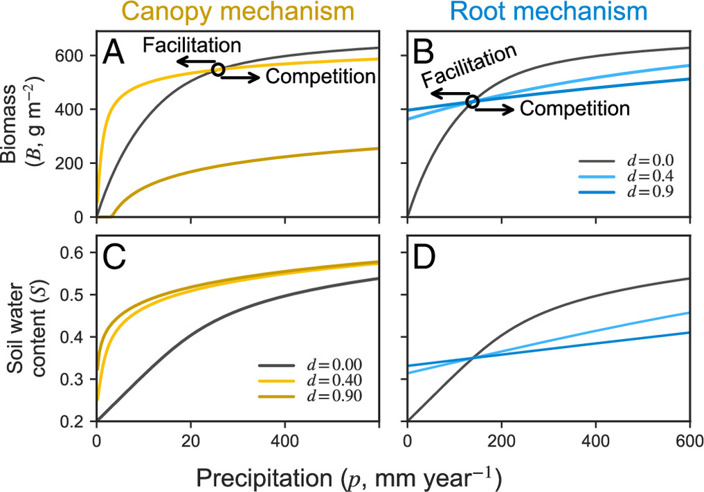
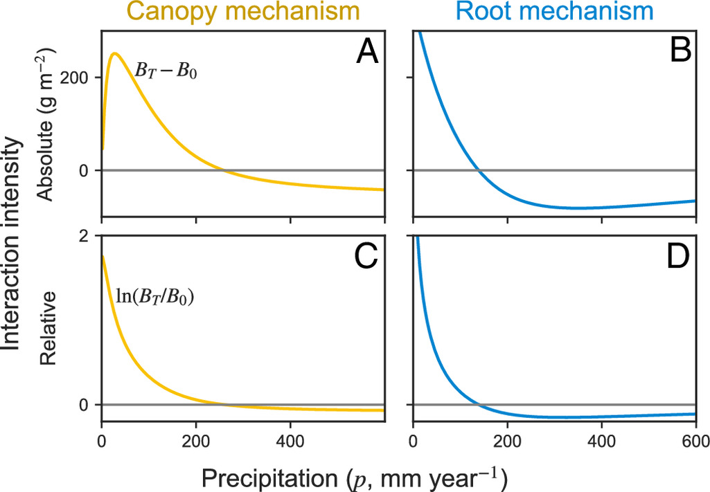

Mechanisms behind facilitation–competition transition along rainfall gradients
- authors:
- Oded Hollander { }^{a,b} https://orcid.org/0009-0009-0484-2962
- Yair Mau { }^{b} https://orcid.org/0000-0001-6987-7597
- Niv DeMalach { }^{a} https://orcid.org/0000-0002-4509-5387
[b] Department of Soil and Water Sciences, Institute of Environmental Sciences, Robert H. Smith Faculty of Agriculture, Food and Environment, The Hebrew University of Jerusalem, Rehovot 76100001, Israel - Proceedings of the National Academy of Sciences, 2026
- Correspondence: Yair Mau (yair.mau@mail.huji.ac.il), Niv DeMalach (niv.demalach@mail.huji.ac.il)
- Received: May 29, 2026; | Accepted: July 16, 2026
- Keywords: Stress Gradient Hypothesis | aridity gradient | precipitation | plant–plant interactions | consumer–resource model
- doi: https://doi.org/10.1073/pnas.2615937123
- This article contains supporting information online at https://doi.org/10.1073/pnas.2615937123#supplementary-materials.
- How to cite:
O. Hollander, Y. Mau, & N. DeMalach, Mechanisms behind facilitation–competition transition along rainfall gradients, Proc. Natl. Acad. Sci. U.S.A. 123 (35) e2615937123, https://doi.org/10.1073/pnas.2615937123 (2026).
Edited by David Tilman, University of Minnesota College of Biological Sciences, St. Paul, MN; received May 29, 2026; accepted July 16, 2026
Significance
Shifts in woody cover, such as shrub encroachment and afforestation, are transforming drylands across the globe and directly impacting the herbaceous plants that provide critical forage. However, predicting whether woody plants will facilitate herb growth or inhibit it, and how these interactions change with rainfall, remains a major challenge. Our study translates the classic Stress Gradient Hypothesis into a quantitative, mechanistic model that includes both canopy shading and water dynamics. By unpacking these physical mechanisms, the framework explains why field studies often reach conflicting conclusions. More importantly, it provides a predictive tool to determine how changes in woody cover affect productivity, offering a transparent basis for planning conservation, restoration, and ecosystem management in water-limited environments.
Abstract
Woody cover is rapidly changing due to mortality, shrub encroachment, and afforestation, reshaping herbaceous communities and ecosystem functioning worldwide. Trees and shrubs often facilitate herb growth in dry sites but suppress it in wetter environments. Explanations for this facilitation-to-competition transition lack a clear link to resource competition theory, despite being a fundamental aspect of the broader Stress Gradient Hypothesis. While recent quantitative frameworks exist, explanations remain contested and have yet to reproduce the shift along a rainfall gradient from first principles. Here, we present a mechanistic framework consisting of two submodels: i) canopy shading, which reduces photosynthesis (competition) and evapotranspiration (facilitation), and ii) root effects, including water uptake (competition) and increased moisture via hydraulic redistribution (facilitation). We elucidate the conditions under which interactions shift from facilitation to competition. The models reproduce this reversal only when water is not the sole limiting factor at high rainfall or when woody density increases with precipitation. The two pathways leave distinct signatures: Canopy shading produces a hump-shaped pattern with maximum facilitation at intermediate stress, while the root pathway predicts a shift from positive to negative interactions as water availability increases. More generally, the reversal is robust across mechanisms and gradients: Enhanced infiltration can replace hydraulic redistribution, evaporative demand can replace rainfall, and combined canopy–root interactions preserve the transition. By translating a classic idea into a quantitative framework, this model enhances ecosystem management in a changing world.
Introduction
Global climate and land-use changes are rapidly reshaping woody vegetation worldwide (1, 2). These shifts are especially common in drylands, which cover about 40% of Earth’s land surface (3, 4). Many water-limited systems are losing woody cover due to widespread drought and fire (5). Conversely, other dry regions show woody expansion, driven by shrub encroachment (2, 6) and large-scale afforestation aimed at climate mitigation (1, 7). In these ecosystems, woody plants (hereafter, trees) strongly shape microclimate and resource availability, thereby influencing the abundance and distribution of herbaceous plants (hereafter, herbs) that sustain forage production and biodiversity in drylands (2, 6).
Trees are ecosystem engineers, altering the environment beyond simply consuming light and water (8). They can facilitate herb growth through canopy and root mechanisms. The canopy suppresses light availability, which reduces carbon assimilation (photosynthesis) but also lowers evapotranspiration and therefore water loss (9). This reduction in evapotranspiration also results from microclimatic buffering: slower wind speeds, higher humidity, and lower temperatures beneath the canopy (10). Tree roots not only extract water, thereby drying the soil, but can also increase soil moisture by enhancing infiltration (11) and potentially redistributing water from deeper to shallower soil layers through hydraulic lift (12, 13).
Rainfall amount often mediates the balance between these positive and negative effects. Meta-analyses find that trees typically benefit herbs at low rainfall but hinder them as rainfall increases (14–16). Even so, some studies report inconsistent neighbor effects along similar gradients (17), pointing to hidden thresholds or additional factors that alter the expected pattern.
Over the past three decades, the transition from facilitation to competition has largely been investigated through the lens of the Stress Gradient Hypothesis (SGH). This conceptual framework was proposed to explain why facilitation dominates under high abiotic stress (low rainfall), whereas competition prevails under benign conditions (18–23). The original explanations emphasized plant responses along water-stress gradients (20), but the hypothesis has since been applied to many other stress types (24, 25). The primary argument is that tree-mediated relief of water stress dominates under low rainfall, whereas shading-induced inhibition dominates under low stress (high rainfall) (9). These verbal arguments were later extended using phenomenological models that embedded spatial–temporal dynamics (26) and biodiversity feedbacks (27).
Despite its prominence, the SGH has been questioned both mechanistically and in terms of predicted patterns (9, 28–31). Some studies argue that species interactions become more strongly negative with rainfall (14), whereas others report a unimodal (hump-shaped) pattern in which facilitation peaks at intermediate stress and weakens under both severe aridity and benign conditions (29). This unimodal relationship is hypothesized to reflect a shifting balance between simultaneous, opposing processes: While trees facilitate herbs via canopy shading at intermediate stress, they outcompete them under benign conditions and ultimately suppress them under extreme aridity because belowground competition for scarce water overwhelms aboveground benefits. Resolving these discrepancies calls for quantitative models that explicitly represent resource dynamics and make assumptions transparent, allowing specific processes such as shading or water uptake to be identified as drivers that generate, sustain, or limit facilitation along the gradient.
Consumer–resource theory is the leading modeling framework for mechanistic explanations of species interactions (32–35). Yet, it has only recently been applied to the SGH (36, 37). These recent applications yielded insights into the role of trees in elevating resource availability during early succession (36) and into the joint effects of drought and grazing (37). However, they focused exclusively on root mechanisms and did not consider canopy shading, the main mechanism emphasized in the classical conceptual hypothesis (20). Crucially, and contrary to the SGH’s prediction of a facilitation-to-competition shift, these consumer–resource models produced an interaction sign that remained constant (either positive or negative) along the rainfall gradient, rather than a transition from facilitation to competition.
Here, we develop a minimal consumer–resource framework that generates the classic shift from facilitation to competition as rainfall (resource supply rate) increases. First, in the canopy submodel (Fig. 1A), trees suppress both carbon assimilation and evapotranspiration, but reduce evapotranspiration more strongly, a condition that enables net facilitation under water-limited conditions. Next, in the root submodel (Fig. 1B), trees simultaneously extract soil water (competition) and redistribute it upward from deep layers via hydraulic lift (facilitation), with the balance shifting as soil moisture increases. We show that both mechanisms can reproduce the SGH crossover (Fig. 1C): facilitation at low rainfall giving way to competition as rainfall rises. Furthermore, the transition is also preserved in combined models where canopy shading acts together with root water uptake, even without hydraulic lift, and can also arise when trees enhance infiltration.

Results
We developed a consumer–resource model that describes the coupled dynamics of herbs’ biomass and soil moisture as follows:
\begin{align*} \textbf{herb biomass:}&&\frac{dB}{dt} &= \overbrace{a\, {f_a}(d)\, {f_k}(B)B\, S}^{\text{growth}} - \overbrace{m\, B}^{\text{mortality}} \tag{1a} \\ \textbf{soil water:}&& \underbrace{n z_r}_{\mathclap{\substack{\text{active}\\ \text{soil depth} }}} \frac{dS}{dt} &= \underbrace{p}_{\text{precipitation}} - \underbrace{q_{s} S^c}_{\text{drainage}} - \underbrace{e_0\, {f_e}(d) B\, S}_{\text{evapotranspiration}} - \underbrace{{f_r}(S ,d)}_{\text{tree root}}. \\ &\tag{1b} \end{align*}
The first equation tracks the change in herb biomass (B) over time, which is governed by growth and mortality processes. The second equation represents the dynamics of soil moisture (S), which is influenced by gains from precipitation (p) and losses due to drainage, evapotranspiration, and a tree-root effect. Due to their much slower dynamics, trees are represented as a constant parameter for tree density (d representing canopy cover or root density). This parameter affects both the canopy-suppression factors on herb growth (f_{a}{(d)}) and on evapotranspiration (f_{e}{(d)}), as depicted in Fig. 1A. In the main model, tree density d is fixed to isolate the immediate resource-mediated mechanisms. We relax this assumption in SI Appendix, section S1, by considering precipitation-dependent woody cover. The impact of the root mechanism f_{r}{(S,d)} on soil water is depicted in Fig. 1B. We further assumed that when water and light are ample, other factors such as nutrients, pathogens or self-shading, limit herb growth, represented by a carrying capacity term f_{k}{(B)} = 1 - B/k. For simplicity, we started by investigating each mechanism sepa rately: When examining canopy effects, we removed root effects, and vice versa and only later tested the combined effects.
When water is the main limiting factor and tree density is constant, our model, like previous mechanistic models (36, 37), shows that the interaction between trees and herbs remains either facilitative or competitive along the entire precipitation gradient. However, a key finding is that the facilitation-to-competition transition does not arise from water limitation alone. Under constant tree density, an additional growth-limiting factor (represented by f_{k}{(B)}) is a necessary condition for the transition to occur (SI Appendix, section S2). When this condition is met, both the canopy and root mechanisms can produce a clear shift from facilitation to competition as precipitation increases. The following explores how each of these mechanisms drives this transition in steady-state solutions. An extended discussion on transient solutions can be found in SI Appendix, section S3.
In the canopy mechanism, in the absence of trees, herb biomass increases with precipitation, showing a saturation pattern as the curve’s slope decreases (black line in Fig. 2A). With some trees (light curve), herb biomass is higher than the no-tree baseline at low precipitation but is reduced at higher precipitation levels, showing a clear transition from facilitation to competition. At very high tree density (dark curve), herb biomass is suppressed across the entire precipitation gradient.

This pattern is a result of a tug of war between two opposing forces exerted by the trees. First, trees facilitate growth by providing shade, which reduces evapotranspiration and conserves soil water. This effect is represented by the function f_{e}{(d)}, leading to greater soil water availability relative to a no-tree environment (Fig. 2C). Second, trees inhibit herb growth by reducing light availability through the function f_{a}{(d)}. This factor, along with other limiting elements (captured by the carrying capacity term, f_{k}{(B)}), down-regulates herb assimilation. The combined effect is represented by the product f_{a}{(d)}f_{k}{(B)}.
At low precipitation, herb biomass is low, so the carrying capacity term f_{k}{(B)} is very weak (close to 1). In this dry scenario, the tug of war is mainly between the water-saving benefit of f_{e}{(d)} and the assimilation reduction effect of f_{a}{(d)}. When tree density is low, the extra soil water overpowers the minor loss in assimilation, facilitating herb growth (light curve in Fig. 2A). However, when tree cover is high, the reduction in assimilation becomes too strong, suppressing the herbs (dark curve). As precipitation increases, herb biomass also rises. This strengthens the carrying capacity term f_{k}{(B)} (making it closer to zero) and tips the balance. The combined competitive effect of reduced assimilation and carrying capacity (f_{a}{(d)}f_{k}{(B)}) becomes stronger than the facilitative effect of water conservation. In other words, under high rainfall, water is no longer the limiting factor, and therefore, the benefit of reduced water loss is not enough to compensate for the reduction in photosynthesis, leading to a transition from net facilitation to net competition.
For the root mechanism, all nonzero tree densities show a similar transition pattern: Herb biomass is higher than the baseline at low precipitation and lower at high precipitation (Fig. 2B). As tree density increases, both effects intensify along the precipitation gradient. This is because the tug of war between facilitation and competition is expressed by a single function, f_{r}{(S,d)}, which represents the net effect of tree roots on soil water available in the herb root zone.
This function captures the tipping of the balance as soil water content changes. At low soil water levels, tree roots can lift water from deeper soil layers to the herb root zone, facilitating growth. As soil water content increases, hydraulic lift is no longer possible. Beyond this point, roots begin to compete with herbs by taking up water from the same soil layer. Counterintuitively, the root term f_{r}{(S,d)} by itself does not produce a facilitation-to-competition switch (SI Appendix, section S2). With water as the only limiting resource (i.e., f_{k}{(B)} = 1), the equilibrium soil moisture S^{\star} is set by the consumer and is independent of the precipitation supply p [R* logic (33)]. Because f_{r} acts through S rather than directly through p, the sign of the interaction is fixed by whether S^{\star} lies below or above the hydraulic switching range, so it does not change along the rainfall gradient. However, when a second growth constraint is introduced through the carrying-capacity term f_{k}{(B)}, the outcome changes: As p increases, biomass approaches its limit and cannot deplete water further, so S^{\star} rises. This upward shift in S^{\star} carries the system across the hydraulic threshold, turning facilitative lift into competitive uptake and yielding the observed transition. Put simply, f_{k}{(B)} caps biomass at high rainfall, weakening consumption and allowing soil water to accumulate, which moves S^{\star} into the competitive domain of f_{r}{(S,d)}.
Notably, the two mechanisms produce very different biomass responses at low precipitation. In the canopy mechanism, precipitation is the only water source, so all curves must start from the origin, zero biomass at zero rainfall. A small initial increase in precipitation leads to stronger facilitation, which is visible as a widening gap between the low-tree-density curve and the no-tree baseline (light and black curves in Fig. 2A, respectively). This facilitative gap eventually narrows before disappearing at the transition to competition. In contrast, the root mechanism includes an additional water source: hydraulic lift from deeper soil layers during dry surface conditions. This allows herb biomass to persist even without precipitation. The gap between tree-density curves and the baseline shrinks steadily as precipitation increases, until it reaches the transition point. This distinct pattern in the biomass gap is key to understanding the contrasting responses in interaction intensity between the two mechanisms.
For the canopy mechanism, the interaction intensity based on the absolute difference is unimodal (Fig. 3A). This pattern directly results from the widening and eventual vanishing of the gap between the biomass curve with trees and the no-tree baseline curve, as previously discussed. However, when using the relative log response ratio (Fig. 3C), the interaction intensity decreases monotonically for p below the transition threshold. In contrast, the root mechanism yields monotonically decreasing positive interaction intensities, regardless of whether absolute difference or relative log response ratio is used. A broader discussion of the canopy mechanism’s interaction intensity in the full (p,d) parameter space is given in SI Appendix, section S4.

Discussion
The Stress Gradient Hypothesis has guided decades of work but has largely been articulated in verbal or phenomenological terms (9, 19, 20, 26, 27, 29, 30). We show that a minimal consumer–resource model linking canopy shading or root water redistribution to herb biomass generates the observed shift from facilitation to competition along rainfall gradients. Our model also specifies when the shift should and should not arise. Finally, the framework also clarifies the expectation on interaction intensity, with a mid-gradient peak in the facilitation under shading and a monotonic decline from positive to negative effect under the root pathway.
Our aim is to provide general insight and testable predictions rather than site-specific accurate description. Accordingly, the model is intentionally simple yet mechanistic: Water balance is explicit, and interaction signs emerge from the equations rather than being imposed a priori. This simplicity enables a thorough understanding of each parameter (SI Appendix, section S5).
This parsimony rests on two modeling choices that define the scope of the framework. First, the herbaceous layer is represented as a single biomass compartment governed by logistic growth. This formulation is most appropriate when herb biomass is dominated by a single species, but can also serve as an effective description of multispecies communities when species are similar in their growth and interaction parameters (SI Appendix, section S6). When communities contain strong trait differences among herbs, or when woody plants alter competitive interactions within the herbaceous layer, biomass responses may depend on community composition. In such cases, the model should be interpreted as a baseline against which composition-dependent responses can be compared.
Second, the deterministic rainfall–biomass curve should be interpreted as a mean-field expectation under constant environmental conditions. Its declining slope captures the general presumption that marginal biomass gains decrease as water limitation weakens (38, 39), but not the exact curvature or threshold of any particular site. Reproducing the scatter observed in natural systems would require extensions that incorporate spatial heterogeneity (e.g. soil) and time-varying drivers such as stochastic rainfall and grazing, producing a distribution of biomass outcomes rather than a single predicted value.
The framework also clarifies which stress gradients it add resses. The Stress Gradient Hypothesis has been invoked for many stress types (9, 18–23). Yet, as Maestre et al. noted, “Stress is not a precise concept, and therefore it is difficult to apply quantitatively to communities or ecosystems” (29). Here we focus on mechanisms tied directly to plant water balance, while recognizing that other stressors, such as freezing, toxicity, or salinity, and other interaction pathways, such as grazing protection, enhanced nutrient supply, spatial patterning, and tree density dynamics, are likely to require different model structures (31, 36, 37, 40, 41). The same framework can also be applied to evaporative demand, another driver of aridity influenced by temperature and humidity. This driver can change the magnitude of facilitation and competition and shift the transition point along the gradient. Still, the model consistently predicts a shift from net facilitation to net competition as water limitation relaxes (SI Appendix, Fig. S6 and section S7).
Notably, our model resolves the empirical question whether stress should be represented by resource supply rate (precipitation) or by resource abundance (soil water content) (9, 36, 37, 42). It shows that precipitation or evaporative demand are the appropriate measures for quantifying water stress in such systems (SI Appendix, section S8). Soil water content, in contrast, is not an independent driver but an emergent outcome of interacting processes including precipitation, evapotranspiration, biotic uptake, and substrate properties (9, 36, 42). Treating soil water as externally fixed cuts off these mechanistic links and removes the causal connection between resource supply and species interactions. Only when stress is parameterized as a supply rate can the facilitation–competition interplay characteristic of the SGH be captured (9, 36, 37, 42).
Canopy Mechanism
Shading is a ubiquitous factor in plant growth and community dynamics (43–46). This mechanism is central in conceptual models that generate the transition from facilitation to competition (9, 20). Our findings indicate that shading can simultaneously enhance and constrain growth, with implications far beyond tree–herb interactions.
In the model, shading acts solely by reducing light, so any reduction in radiation, whether caused from trees, slope aspect, buildings, or solar panels, should generate similar responses. In dry conditions, shaded hillslopes, north-facing in the northern hemisphere and the reverse in the southern hemisphere, should be more productive than sun-exposed slopes. In wet conditions, the pattern should reverse. Variation with slope aspect is a long-standing observation in botany (47, 48).
The model highlights several conditions that have seldom been investigated in theoretical and empirical studies along gradients. First, a necessary condition for facilitation under shading is that the proportional reduction in evapotranspiration with increasing shade exceeds the proportional reduction in photosynthesis. This condition can hold for many plants because assimilation often saturates at high light, whereas transpiration may continue to increase when water is not limiting (49–51). However, there are clear exceptions, such as species that require high light and are sensitive to shade. We therefore suggest that empirical tests of the canopy mechanism begin by verifying this assumption. From the theoretical side, consumer–resource models have traditionally assumed a full coupling of evapotranspiration and assimilation represented by a constant conversion factor of resource uptake to biomass, that is, fixed water-use efficiency (52, 53). While some degree of coupling is clearly expected, since both processes are shaped by stomatal conductance, assuming a fixed proportionality is unlikely to be realistic. We therefore relaxed this assumption, which was necessary for producing the SGH pattern.
For the transition from facilitation to competition to occur without a change in tree cover, another condition must be met. Under high rainfall, water must cease to be the main limiting factor (the carrying capacity effect). This implies that a qualitative switch is less likely when moving from an arid to a semiarid system if both remain water-limited. Instead, a switch is expected only when crossing into a system limited by another resource, such as nutrients (SI Appendix, section S9 which shows that carrying capacity is equivalent to an additional essential resource). This result may explain empirical studies that do not observe a shift along precipitation gradients (17, 29, 54, 55) and underscores that the transition should not be viewed as inevitable.
Alternatively, shading can lead to a facilitation-to-competition transition without introducing carrying capacity, but only when tree density increases with rainfall (SI Appendix, section S1). This occurs because at high tree cover, light becomes the primary limiting factor and offsets the positive effects of shading on water balance. This density effect can be further enhanced by photoinhibition, where moderate shade inhibits photosynthesis. We therefore recommend that future empirical studies quantify how tree density changes along the gradient and manipulate tree cover directly, or mimic shading with shade cloth. Such an approach is necessary to determine whether interaction outcomes change under a constant shade level (Fig. 2), or arise from shifts in canopy density along the gradient (SI Appendix, section S1).
To analyze the canopy mechanism, we adopted a two-layer simplification (56), assuming that because tree roots extend deeper than those of herbs, trees do not compete with herbs for the same soil water pool. This allowed us to isolate the consequences of reduced radiation. In most systems, some degree of rooting overlap is likely, so trees also consume water potentially available to herbs. Incorporating tree water uptake together with shading preserved the facilitation-to-competition transition, but shifts it to lower precipitation levels (SI Appendix, section S10).
Root Mechanisms
Below-ground, trees can modify herb water availability through several mechanisms, including competitive water uptake, hydraulic redistribution, and changes to soil infiltration properties. Root-mediated effects in natural settings can be highly variable because they depend on root architecture and soil properties (11, 57).
Under the hydraulic-lift mechanism, trees increase soil moisture under dry conditions and reduce it under wet conditions, so a transition from facilitation to competition can occur. Although we initially expected this transition to arise inevitably from this mechanism, we found that it occurs only when another factor limits biomass at high rainfall; otherwise, equilibrium soil moisture remains constant along the gradient.
Hydraulic redistribution has been documented across a wide range of ecosystems, including temperate forests (58), Mediterranean shrublands (59), and pine woodlands (60, 61), as well as semiarid savannas (62, 63). Yet in semiarid savannas, overstory trees were found to use nearly all hydraulically lifted water to meet their own transpirational demands, yielding net competition rather than facilitation for understory grasses (62). Moreover, the direction and magnitude of hydraulic redistribution can reverse between seasons and years even at a single site (63). We therefore treat hydraulic lift as a secondary and more uncertain mechanism relative to canopy shading. When combined with canopy shading (SI Appendix, section S10), a facilitation-to-competition transition still occurred, but we found no synergistic effect leading to a qualitatively new pattern. Instead, the combined response was intermediate between the patterns produced by each mechanism alone, with a subadditive effect such that the joint impact was weaker than expected from their separate effects. Alternatively, a more common way trees may increase soil moisture is by enhancing infiltration (11). While infiltration alone does not cause a facilitation-to-competition transition (37), our model shows that it can do so when combined with shading: Under low precipitation, the positive effects of increased infiltration dominate, whereas at high rainfall, the negative effects of shading prevail (SI Appendix, section S11).
Concluding Remarks
Our findings help reconcile conflicting reports on interaction strength along rainfall gradients by showing that the expected pattern depends first on the mechanism. Under the canopy pathway, the absolute difference in biomass is hump-shaped, with maximum facilitation at intermediate rainfall, whereas under the root mechanism, the interaction declines monotonically from positive to negative. A second source of variation is the metric, and this sensitivity applies to shading in particular: Only the absolute measure yields a unimodal pattern, whereas relative measures decline with rainfall, consistent with earlier suggestions (9).
Importantly, tree density further modulates these patterns of interactions along aridity gradients (SI Appendix, section S4). Hence, empirical patterns can only be interpreted accurately when tree density is quantified. Under low precipitation, facilitation peaks at intermediate density, while low and high tree densities weaken it. As precipitation increases, progressively lower densities are sufficient to shift the balance from facilitation to competition. Eventually, at high rainfall, even near-zero tree density reduces herb performance, so further changes in density no longer cause a qualitative shift (9).
Many empirical studies report a shift from facilitation to competition (14–16), and many do not (9, 28–31). In the lens of our framework, cases without a shift arise when i) other pathways dominate, for example, protection from herbivory, or ii) when the conditions for a shift are not met, for example, when shade suppresses photosynthesis more than evapotranspiration. This perspective moves the discussion from whether the hypothesis holds to which mechanism operates. It also points to practical tests, pairing shade manipulations with canopy and soil water measurements, and reporting both absolute and proportional changes.
The broader relevance of this framework lies in the fact that canopy cover is drastically changing. Drylands are undergoing massive afforestation efforts intended to green degraded landscapes, while climate change is driving widespread woody mortality (1, 2, 5–7). Importantly, because the canopy mechanism operates through reduced radiation rather than any tree-specific property, it applies equally to artificial shading, making it relevant to the rapid expansion of solar energy infrastructure and the new shade regimes it creates worldwide (64). These shifts make it increasingly crucial to predict not only whether shade matters, but when it should enhance productivity and when it should suppress it.
By identifying the conditions under which canopy-mediated facilitation should arise and when a facilitation-to-competition transition should occur, this framework gives the Stress Gradient Hypothesis practical predictive power. It thereby connects a classic ecological idea to the management of dryland ecosystems in a rapidly changing world.
Methods
We developed a consumer–resource model (Eq. 1) that describes the dynamics of herbaceous biomass density (B, gm^{−2}) (36, 37), and relative soil-water content (S, dimensionless) (65).
The model makes three key assumptions: i) Tree biomass changes on a much longer time scale than herb biomass, so tree density is treated as constant relative to the herbs and soil water. ii) Herb roots occupy only the upper soil layer, whereas tree roots also reach deeper layers, allowing trees to lift water upward or to draw water away from the herb rooting zone; iii) Herb growth is limited by light and by soil moisture, but only soil water is an accumulative resource that requires a balance equation. Light availability is set instantaneously by canopy density and therefore enters the growth term through f_{a}{(d)}, while additional nonfocal constraints, such as nutrients, pathogens, or self-shading within the herbaceous layer, are represented phenomenologically by f_{k}{(B)} (SI Appendix, sections S5 and S9).
The dynamics of herbaceous biomass density B are governed by growth and mortality terms (Eq. (1a)). The dynamics of relative soil-water content S are dictated by a water-balance equation (65), whose input is precipitation and whose outputs are drainage to deeper soil layers and evapotranspiration, while tree-root processes can function as both inputs and outputs depending on direction of water flow (Eq. (1b)). Herb biomass and water are averaged over the horizontal dimensions, and water is averaged over the active soil depth nz_{r}, following a traditional bucket-model approach (66).
The functions f_{a}{(d)},f_{k}{(B)},f_{e}{(d)},f_{r}{(S,d)} are modular components of the model that can be turned on or off, either when switching between model variants or when testing the impact of different limiting factors. The features that are common to all realizations of the model are: i): Herb biomass growth rate is linearly dependent on soil water content S (when the carrying capacity term is negligible). ii) Herb biomass mortality rate is proportional to biomass. iii) Evapotranspiration is down-regulated by soil moisture availability, following a linear [\beta] function of S (67, 68), and is proportional to herb biomass density. iv) Drainage is modeled by a highly nonlinear function of soil moisture (69), commonly used in ecohydrological modeling (70). v) The logistic growth term f_{k}{(B)} = 1 - B/k was used throughout this paper and was only turned off (f_{k}{(B)} = 1) in SI Appendix, sections S1 and S2, where we studied the effects of removing additional growth-limiting factors beyond water and light. vi) All the model parameters (Table 1) are constant. In particular, precipitation rate p is understood as the total precipitation of the growing season divided by its duration; it is reported in mm instead of mm d^{−1} throughout the paper to enhance interpretability.
| Symbol | Units | Values | Description |
|---|---|---|---|
| Variables | |||
| B | gm ^{−2} | 0 to 1000 | Herb biomass density (73) |
| S | — | 0 to 1 | Relative soil water content (70) |
| Parameters | |||
| a | d^{-1} | 0.05 | Assimilation rate (74) |
| \beta_a | — | 1/3 | Shading function exponent (49–51) |
| \beta_e | — | 4 | Shading function exponent (49–51) |
| k | gm^{-2} | 1000 | Carrying capacity (75) |
| m | d^{-1} | 0.01 | Mortality rate |
| p | mm | 0 to 600 | Precipitation rate (76) |
| e_0 | mm d^{-1} / gm^{-2} | 0.05 | Max evapotranspiration rate per unit biomass density |
| q_{sat} | mm d^{-1} | 800 | Saturated hydraulic conductivity (70) |
| c | — | 10 | Deep infiltration exponent (70) |
| n | — | 0.4 | Soil porosity (70) |
| z_r | mm | 300 | Herb rooting depth (70) |
| d | — | 0 to 1 | Woody plant density |
| S_h | — | 0.3 | Hygroscopic point (70) |
| S_{fc} | — | 0.6 | Field capacity (70) |
| \lambda_h | mm d^{−1} | -2 | Max tree water provision (77) |
| \lambda_{fc} | mm d^{−1} | 10 | Max tree water usage (78) |
Our model belongs to the family of coupled soil moisture and biomass models developed for other purposes (52, 71, 72). The key difference is that many earlier models treated biomass growth and evapotranspiration as the same function scaled by a constant conversion factor, water use efficiency, defined as water loss per unit carbon assimilation. Here, both processes depend on moisture, biomass, and tree density, but they have different functional forms, so water use efficiency varies across environments. This follows from the fact that shading can affect evapotranspiration and assimilation differently (Fig. 1A). In addition, relative biomass growth declines with size through the logistic term, whereas evapotranspiration remains proportional to biomass. These assumptions are both biologically plausible and necessary for the mechanisms we study: If water use efficiency were constant across shading levels, the trivial pattern where partial shade is beneficial but heavy shade is detrimental could not arise.
Below, we discuss in more detail the two main mechanisms employed in this paper.
Canopy Mechanism
Shading affects both plant growth, by reducing light availability and thus photosynthesis, and transpiration, by lowering temperature and radiation levels, which helps retain soil moisture and improve water availability for herbs. When the canopy mechanism is “on,” the root mechanism is disabled by setting f_{r}{(S,d)} = 0, implying a complete partitioning of the soil into two distinct niches, the top available for herbs only, and deeper layers accessible to trees only.
Biomass growth is down-regulated by shading via f_{a}{(d)}, while evapotranspiration is down-regulated via f_{e}{(d)}. The shading functions are f_{j}{(d)} = {(1 - d)}^{\beta_{j}}, where j = \{ a,e\}. Fig. 1A shows the nonlinear decline of these functions with tree density. This formulation was chosen for mathematical simplicity and is not intended to capture the full complexity of shading response that vary among species and ecosystems. Rather, it provides a flexible phenomenological representation of differential shading effects on assimilation and evapotranspiration. A necessary, though not sufficient, condition for facilitation under shading is that assimilation is proportionally less inhibited than transpiration, which in our formulation requires \beta_{e} > \beta_{a}.
Root Mechanism
Trees can influence herbs access to water in two ways: They can lift water from deeper layers into the herbs rooting zone when surface soil is dry (facilitation), and they can uptake water from that zone (competition). The combined effects of hydraulic lift and tree water uptake is described by the function f_{r}{(S,d)}. When the root mechanism is “on,” the canopy mechanism is disabled by setting f_{a}{(d)} = f_{e}{(d)} = 1. The expression for the root function reads:
f_r(S,d) = d\left[ \lambda_h + \varphi\, \max(0,S-S_h) - \varphi\, \max(0,S-S_{fc}) \right] \tag{2}
where the slope \varphi = {(\lambda_{{fc}} - \lambda_{h})}/{(S_{{fc}} - S_{h})}. For S smaller than the hygroscopic point S_{h}, the upper soil is too dry for tree roots to uptake water, and hydraulic lift reaches its maximum ability to bring water from deeper soil layers to the topsoil (\lambda_{h}). For S greater than the field capacity S_{{fc}}, trees cease to benefit from increasing soil water content, and uptake water at a rate \lambda_{{fc}}. Between S_{h} and S_{{fc}}, the root function varies linearly between \lambda_{h} and \lambda_{{fc}}. Regardless of soil water content, the root function depends linearly on tree density d. Fig. 1B shows the function f_{r} in the range S_{h} < S < S_{{fc}}, for zero tree density (d = 0) and maximal tree density (d = 1).
Numerical Solutions
Numerical analyses were performed with Python 3.12, using the libraries NumPy 2.0 and SciPy 1.13. Steady-state solutions (dB/dt = dS/dt = 0) were obtained by finding the roots of the right-hand side of Eq. (1) with scipy.optimize.fsolve, using random starting estimates for the roots (500 < B < 1,500\;\text{g}\,\text{m}^{- 2} and 0.5 < S < 0.6). A root is accepted when B > 10\;\text{g}\,\text{m}^{- 2} and 0 < S < 1; if these criteria are not met, a new set of random starting estimates is chosen. This procedure is repeated up to 10 times, after which the steady-state solutions are estimated by numerically integrating Eq. (1) with scipy.integrate.solve_ivp (stiff solver, default tolerances) up to a final time of 10 thousand days, and the final configuration is taken as the steady-state solutions.
Model Parameters
The specific parameter values (or their ranges) were chosen from typical values found in the literature; details of how these values connect to their sources are given in SI Appendix, section S12.
Data, Materials, and Software Availability
Code data have been deposited in Zenodo (https://doi.org/10.5281/zenodo.17641468) (79). All other data are included in the manuscript and/or SI Appendix.
Acknowledgments
We thank Barel Tsafon, Atay Mor, Santanu Das, Erez Feuer, and Moshe Shachack for comments on earlier drafts. We thank Jonathan Friedman for useful discussion. This work was supported by the Center for Sustainability, and by the Research Center for Agriculture, Environment and Natural Resources, both of the Hebrew University of Jerusalem.
Competing interests
The authors declare no competing interest.
References
1.
2.
L. Biancari et al., Drivers of woody dominance across global drylands. Sci. Adv. 10, eadn6007 (2024). Crossref.
3.
4.
5.
X. Zong, X. Tian, X. Liu, L. Shu, Drought threat to terrestrial gross primary production exacerbated by wildfires. Commun. Earth Environ. 5, 225 (2024). Crossref.
6.
7.
8.
C. G. Jones, J. H. Lawton, M. Shachak, Organisms as ecosystem engineers. Oikos 69, 373–386 (1994). Crossref.
9.
M. Holmgren, M. Scheffer, Strong facilitation in mild environments: The stress gradient hypothesis revisited. J. Ecol. 98, 1269–1275 (2010). Crossref.
10.
11.
12.
13.
S. Sha, G. Cai, S. Liu, M. A. Ahmed, Roots to the rescue: How plants harness hydraulic redistribution to survive drought across contrasting soil textures. Adv. Biotechnol. 2, 43 (2024). Crossref.
14.
J. Dohn et al., Tree effects on grass growth in savannas: Competition, facilitation and the stress-gradient hypothesis. J. Ecol. 101, 202–209 (2013). Crossref.
15.
16.
17.
F. T. Maestre, F. Valladares, J. F. Reynolds, Is the change of plant-plant interactions with abiotic stress predictable? A meta-analysis of field results in arid environments. J. Ecol. 93, 748–757 (2005). Crossref.
18.
M. Bertness, S. Shumway, Competition and facilitation in marsh plants. Am. Nat. 142, 718–724 (1993). Crossref.
19.
20.
M. Holmgren, M. Scheffer, M. A. Huston, The interplay of facilitation and competition in plant communities. Ecology 78, 1966–1975 (1997). Crossref.
21.
R. M. Callaway, L. R. Walker, Competition and facilitation: A synthetic approach to interactions in plant communities. Ecology 78, 1958–1965 (1997). Crossref.
22.
R. W. Brooker, T. V. Callaghan, The balance between positive and negative plant interactions and its relationship to environmental gradients: A model. Oikos 81, 196–207 (1998). Crossref.
23.
24.
25.
26.
27.
S. Xiao, R. Michalet, G. Wang, S. Y. Chen, The interplay between species’ positive and negative interactions shapes the community biomass-species richness relationship. Oikos 118, 1343–1348 (2009). Crossref.
28.
29.
F. T. Maestre, R. M. Callaway, F. Valladares, C. J. Lortie, Refining the stress-gradient hypothesis for competition and facilitation in plant communities. J. Ecol. 97, 199–205 (2009). Crossref.
30.
D. Malkinson, K. Tielbörger, What does the stress-gradient hypothesis predict? Resolving the discrepancies. Oikos 119, 1546–1552 (2010). Crossref.
31.
32.
R. H. MacArthur, Geographical Ecology: Patterns in the Distribution of Species (Princeton University Press, Princeton, NJ, 1972).
33.
D. Tilman, Resource Competition and Community Structure, Monographs in Population Biology (Princeton University Press, Princeton, NJ, 1982), vol. 17.
34.
A. D. Letten, P. J. Ke, T. Fukami, Linking modern coexistence theory and contemporary niche theory. Ecol. Monogr. 87, 161–177 (2017). Crossref.
35.
T. Koffel, T. Daufresne, C. A. Klausmeier, From competition to facilitation and mutualism: A general theory of the niche. Ecol. Monogr. 91, e01458 (2021). Crossref.
36.
37.
38.
39.
40.
41.
V. I. Giachetti, F. A. Decunta, M. Druille, M. R. Aguiar, Stronger fertile island patterns enhance plant facilitation in drylands, regardless of overall ecosystem fertility. J. Ecol. 114, e70206 (2026).
42.
B. J. Butterfield, J. B. Bradford, C. Armas, I. Prieto, F. I. Pugnaire, Does the stress-gradient hypothesis hold water? Disentangling spatial and temporal variation in plant effects on soil moisture in dryland systems. Funct. Ecol. 30, 10–19 (2016). Crossref.
43.
44.
45.
46.
47.
J. E. Cantlon, Vegetation and microclimates on north and south slopes of cushetunk mountain, new jersey. Ecol. Monogr. 23, 241–270 (1953). Crossref.
48.
G. Yin et al., Aspect matters: Unraveling microclimate impacts on mountain greenness and greening. Geophys. Res. Lett. 50, e2023GL105879 (2023). Crossref.
49.
A. Mditshwa, L. S. Magwaza, S. Z. Tesfay, Shade netting on subtropical fruit: Effect on environmental conditions, tree physiology and fruit quality. Sci. Hortic. 256, 108556 (2019). Crossref.
50.
G. Guti’errez-Gamboa, E. Villalobos-Soublett, M. Garrido-Salinas, N. Verdugo-V’asquez, Monofilament shading nets improved water use efficiency on high-temperature days in grapevines subjected to hyperarid conditions. Horticulturae 10, 176 (2024). Crossref.
51.
52.
53.
54.
K. Tielbörger, R. Kadmon, Temporal environmental variation tips the balance between facilitation and interference in desert plants. Ecology 81, 1544–1553 (2000). Crossref.
55.
56.
57.
58.
D. R. Smart, E. Carlisle, M. Goebel, M. Nosal, Hydraulic lift and its influence on the water content of the rhizosphere: An example from sugar maple, acer saccharum. Oecologia 141, 651–659 (2005).
59.
T. S. David et al., Indications of hydraulic lift by pinus halepensis and its effects on the water relations of neighbour shrubs. Biol. Plant. 48, 393–399 (2004).
60.
61.
J. I. Querejeta et al., Hydraulic redistribution supplies a major water subsidy and improves water status of understory species in a longleaf pine ecosystem. Ecohydrology 11, e2680 (2018).
62.
R. S. Oliveira, T. E. Dawson, S. S. O. Burgess, Impacts of hydraulic redistribution on grass-tree competition vs facilitation in a semi-arid savanna. New Phytol. 217, 194–206 (2018). PubMed.
63.
R. L. Scott et al., Hydraulic redistribution buffers climate variability and regulates grass-tree interactions in a semiarid riparian savanna. Ecohydrology 11, e2271 (2018).
64.
J. Widmer, B. Christ, J. Grenz, L. Norgrove, Agrivoltaics, a promising new tool for electricity and food production: A systematic review. Renew. Sustain. Energy Rev. 192, 114277 (2024). Crossref.
65.
I. Rodríguez-Iturbe, A. Porporato, Ecohydrology of Water-Controlled Ecosystems: Soil Moisture and Plant Dynamics (Cambridge University Press, 2004).
66.
A. J. Guswa, M. A. Celia, I. Rodriguez-Iturbe, Models of soil moisture dynamics in ecohydrology: A comparative study. Water Resour. Res. 38, 5-1–5-15 (2002). Crossref.
67.
68.
69.
R. B. Clapp, G. M. Hornberger, Empirical equations for some soil hydraulic properties. Water Resour. Res. 14, 601–604 (1978). Crossref.
70.
I. Rodriguez-Iturbe, A. Porporato, F. Laio, L. Ridolfi, Plants in water-controlled ecosystems: Active role in hydrologic processes and response to water stress: I. Scope and general outline. Adv. Water Resour. 24, 695–705 (2001). Crossref.
71.
72.
B. E. Schaffer, J. M. Nordbotten, I. Rodriguez-Iturbe, Plant biomass and soil moisture dynamics: Analytical results. Proc. R. Soc. A Math. Phys. Eng. Sci. 471, 20150179 (2015).
73.
A. Mussery, D. Helman, S. Leu, A. Budovsky, Modeling herbaceous productivity considering tree-grass interactions in drylands savannah: The case study of yatir farm in the negev drylands. J. Arid Environ. 124, 160–164 (2016). Crossref.
74.
J. J. James, R. E. Drenovsky, A basis for relative growth rate differences between native and invasive forb seedlings. Rangel. Ecol. Manag. 60, 395–400 (2007). Crossref.
75.
76.
J. Huang, H. Yu, A. Dai, Y. Wei, L. Kang, Drylands face potential threat under 2 c global warming target. Nat. Clim. Change 7, 417–422 (2017). Crossref.
77.
78.
79.
Y. Mau, yairmau/sgh: v1.0.0. Zenodo. Crossref. Deposited 18 November 2025.